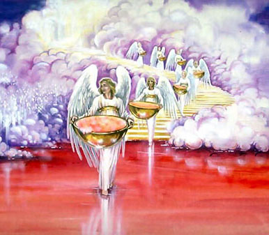
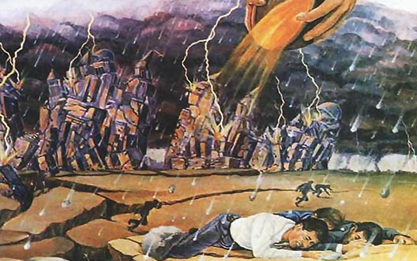

AS SETE PRAGAS
Graça é um lapso (período) de tempo disponibilizado pelo Criador gratuitamente para salvar a humanidade, motivado por sua infinita misericórdia, garantindo ao pecador penitente mediante arrependimento, a remissão dos pecados, restabelecendo-o através da fé em seu filho Jesus ao estado de Adão antes do pecado, revestindo-os com sua natureza divina. Todavia, quando Salmos 14:2. Destarte, a renomada autora White, comunga do mesmo entendimento asseverando que o Espírito de Deus vai se retirar da Terra, motivado pela resistência e rejeição dos homens ao seu chamado divino, isto acontecerá quando o Senhor olhar para Terra e vê que não há mais ninguém com coração aberto para receber a justiça de Cristo (não há justo), portanto, não haverá mais motivo para interceder em favor do pecador, Jesus sairá do santuário fechando a porta da graça. A aludida autora relata.
O Espírito de Deus, insultado, rejeitado, injuriado, já está Se retirando da Terra. À medida que o Espírito de Deus Se for afastando, a cruel obra de Satanás se efetuará em terra e mar. Os ímpios passaram os limites de seu tempo de graça; o Espírito de Deus, persistentemente resistido, foi, por fim, retirado. Desabrigados da graça divina, não têm proteção contra o maligno.
Ellen G. White, Eventos Finais, pág 209
Então Satanás tomará o controle da Terra em meio ao caos, infligindo a mais cruenta perseguição contra o povo de Deus em meio às pragas no tempo de angústia. Segundo relatos de White, Eventos Finais, logo após os anjos cessarem de conter os quatro ventos.
Satanás mergulhará então os habitantes da Terra em uma grande angústia final. Ao cessarem os anjos de Deus de conter os ventos impetuosos das paixões humanas, ficarão às soltas todos os elementos de contenda. O mundo inteiro se envolverá em ruína mais terrível do que a que sobreveio a Jerusalém na antiguidade.
Ellen G. White, Eventos Finais, pág 206
Dessa maneira, Jesus sairá do santuário encerrando sua obra intercessora e diz: Está feito! segundo o autor do Apocalipse, neste exato momento Apocalipse 16:18. Complementando este ingente acontecimento, White em seu livro O Grande Conflito, relata estas cenas gloriosas, e os eventos que sucederão, dizendo:
Essa voz abala os céus e a Terra. Há um grande terremoto "como nunca tinha havido desde que há homens sobre a Terra; tal foi este tão grande terremoto." Apocalipse 16:18. O firmamento parece abrir-se e fechar-se. A glória do trono de Deus dir-se-ia atravessar a atmosfera. As montanhas agitam-se como a cana ao vento, e anfractuosas rochas são espalhadas por todos os lados. Há um estrondo como de uma tempestade a sobrevir. O mar é açoitado com fúria. Ouve-se o sibilar do furacão, semelhante à voz de demônios na missão de destruir. A Terra inteira se levanta, dilatando-se como as ondas do mar. Sua superfície está a quebrar-se. Seu próprio fundamento parece ceder. Cadeias de montanhas estão a revolver-se. Desaparecem ilhas habitadas. Os portos marítimos que, pela iniquidade, se tornaram como Sodoma, são tragados pelas águas enfurecidas. A grande Babilônia veio em lembrança perante Deus, "para lhe dar o cálice do vinho da indignação da Sua ira." Apocalipse 16:19, 21.
Ellen G. White, O Grande Conflito, pág 642-643
Todos os casos foram decididos, fecha a porta da graça, os quatro anjos soltam os quatro ventos e sete pragas cairão de forma avassaladora trazendo os mais severos juízos divinos castigando a humanidade impiedosamente. A irmã White destaca de forma cristalina estas terríveis cenas finais da história terrestre, descrevendo porque os ímpios são merecedores de receberem as sete pragas, da seguinte forma:
É impossível descrever o horror e desespero dos que pisaram os santos mandamentos de Deus. O Senhor lhes deu Sua lei; eles poderiam haver aferido seu caráter por ela, e conhecido seus defeitos enquanto ainda havia oportunidade para arrependimento e correção; mas, a fim de conseguir o favor do mundo, puseram de parte seus preceitos e ensinaram outros a transgredir. Esforçaram-se por compelir o povo de Deus a profanar o Seu sábado. Agora são condenados por aquela lei que desprezaram. Com terrível clareza vêem que se acham sem desculpas. Escolheram a quem servir e adorar. "Então vereis outra vez a diferença entre o justo e o ímpio; entre o que serve a Deus, e o que O não serve." Mal. 3:18.
Ellen G. White, O Grande Conflito, pág 645
Importa destacar, que os justos, que receberam a chuva Serôdia, contemplados pela justiça de Cristo, serão maravilhosamente protegidos pelo Senhor das agruras que assolarão a terra infligida pelas pragas; ao passo que os ímpios, sofrerão os mais terríveis flagelos já visto pelos homens, e sentirão o peso da ira de Deus por rejeitarem seu convite divino na mensagem do terceiro anjo.
Diante dos fatos narrados, insta salientar, que assim como o Senhor é grande em misericórdia, Ele também o é em justiça, por isso II Timóteo 2:13. Bem sabemos que Deus é misericordioso, assim como é justo, portanto Ele não pode deixar de retribuir a cada um segundo as suas obras, assim inferimos à luz da lavra da renomada autora White.
A glória de Deus é ser misericordioso, cheio de clemência, benignidade, bondade e verdade. Mas a justiça manifestada em punir o pecador é tão verdadeiramente a glória do Senhor como a manifestação de Sua misericórdia. O Senhor Deus de Israel executará juízos sobre os deuses deste mundo como aconteceu com os deuses do Egito. Com fogo e inundações, pragas e terremotos, Ele despojará o mundo.
Ellen G. White, Eventos Finais, pág 206

O juízo de Deus será executado, por desídia do pecador, que rejeitou a graça de um Deus misericordioso e santo, portanto não restará mais sacrifício em benesse do pecador, Jesus fez o último esforço. Segundo o profeta Jeremias,
Jeremias 25:31.
Dessa maneira, a mencionada autora White, narra os solenes acontecimentos desencadeados pelo derramamento das sete últimas pragas.
Solenes acontecimentos ainda ocorrerão diante de nós. Soará uma trombeta após a outra; uma taça após a outra será derramada sucessivamente sobre os habitantes da Terra. Logo o mundo será abandonado pelo anjo da misericórdia, e as sete últimas pragas estão para ser derramadas. ... Os raios da ira de Deus estão prestes a cair, e quando Ele começar a punir os transgressores, não haverá um período de pausa até ao fim.
Ellen G. White, Eventos Finais, pág 205
A taça da ira de Deus encheu pelos constantes desatinos e alimentos das paixões humanas da natureza pecaminosa, confrontando e anulando sua lei, ridicularizando sua doutrina, seus servos e seus retos juízos. É chegado o tempo das pragas caírem, evento que não poderá acontecer antes de Cristo deixar o santuário celestial. Seguindo narrativas de White, ela relata:
Era impossível serem derramadas as pragas enquanto Jesus oficiava no santuário; mas, terminando ali a Sua obra, e encerrando-se a Sua intercessão, nada havia para deter a ira de Deus, e ela irrompeu com fúria sobre a cabeça desabrigada do pecador culpado, que desdenhou a salvação e odiou a correção.
Ellen G. White, Primeiros Escritos, pág 280
Resta indagarmos a que tempo as pragas serão derramadas? Com efeito, no momento que Jesus sair do santuário fechando a porta da graça, segundo o escritor do Apocalipse somente ele pode efetuar esta obra, vejamos: Apocalipse 3:7-8. Diante dos fatos, inferimos que as pragas cairão no momento em que a porta do Santuário também estiver fechada, e com certeza ficará fechada até a consumação das sete pragas, que cairão sem intercessor, ou seja, a obra de expiação aferida no santuário consumou, o tipo encontrou o antítipo, perdendo seu objeto, segundo relatos do autor do Apocalipse. Apocalipse 15:6-8.
Visto e analisado o tempo em que as pragas serão derramadas, passaremos ao estudo da extensão e a duração que estes flagelos afligirão os ímpios. Embora merecedores dos mais terríveis flagelos por sua rebelião e rejeição da justiça de Cristo, o Senhor usará de misericórdia não derramando as pragas de forma universal evitando exterminá-los da face da terra de inopino, como destaca a renomada autora White, assim ela aduz:
Estas pragas não são universais, ao contrário os habitantes da Terra seriam inteiramente exterminados. Contudo serão os mais terríveis flagelos que já foram conhecidos por mortais. Todos os juízos sobre os homens, antes do final do tempo da graça, foram misturados com misericórdia. O sangue propiciatório de Cristo tem livrado o pecador de os receber na medida completa de sua culpa; mas no juízo final a ira é derramada sem mistura de misericórdia.
Ellen G. White, Conflito dos Séculos, pág 680
Quanto tempo durará os efeitos das pragas? Com certeza, será um período de curta duração. Acolhendo relatos do escritor do apocalipse,
Apocalipse 18:8.
Seguindo o curso da profecia, podemos tomar um dia por ano.
Ezequiel 4:6-7.
Seguindo esta escala, tomando um dia por cada ano, seguramente inferimos que o período em que as pragas serão derramadas durarão apenas um ano.
Com efeito, o Senhor protegerá o seu povo não só das pragas, mas da ferrenha perseguição infligida por Satanás, seus súditos e suas hostes. O Senhor livrará o seu povo, nos termos alegados pelo salmista. Salmos 91:7-11. É imperioso salientar, que vigora à luz do livro O Conflito dos Séculos, os relatos de White, acerca do maravilhoso livramento dos santos, ao passo que os ímpios sofrerão arduamente.
Enquanto os ímpios estão a morrer de fome e pestilências, os anjos protegerão os justos, suprindo-lhes as necessidades. Para aquele que "anda em justiça" é esta promessa: "O seu pão lhe será dado, as suas águas serão certas. Os aflitos e necessitados buscam águas, e não as há, e a sua língua se seca de sede; mas Eu, o Senhor os ouvirei, Eu o Deus de Israel, os não desampararei." Isaías 33:16; 41:17.
Ellen G. White, Conflito dos Séculos, pág 680-681
Por fim, vale destacar, que restará para os ímpios uma fome que transcende a fome literal, fome de ouvir a palavra de Deus que desprezaram enquanto perdurou o tempo de graça, onde Jesus oficiava no santuário, fazendo expiação por seu povo que o seguiram entoando cântico de Moisés. Apocalipse 14:12, e do Cordeiro. Atos 2:42. De acordo com o que viu o profeta de Patmos, que assim nos relatou: Apocalipse 15:2.
Concluímos que os santos saíram vencedores da besta e de sua imagem, não se contaminaram com mulheres (igrejas corrompidas), não aceitaram o decreto obrigando guardar o domingo, defenderam a fé, segundo as Escrituras o seu número é de cento e quarenta e quatro mil, que não passarão pela morte. Ao passo, que a grande multidão, que andaram no caminho largo, são aqueles que seguiram a besta e sua imagem, trocaram os favores de Deus pelos prazeres proibidos e prosperidades seculares, mesmo reconhecendo a verdadeira igreja de Deus, não tiveram coragem de abandonar suas denominações religiosas, suas amizades e entretenimento carnal, negaram dizer sim para a mensagem do terceiro anjo e recusaram a correção e devido preparo para se encontrar com o seu Deus escrevendo seu nome no livro da vida. Segundo, adverte o profeta. Apocalipse 17:8.
AS CINCO PRIMEIRAS PRAGAS - PARTE I
Quando Cristo encerrar sua obra expiatória no santuário, será derramada a ira que, sem mistura, se ameaçara fazer cair sobre os que adoram a besta e sua imagem, e receberam o seu sinal (Apocalipse 14:9-19). A irmã White, narra os últimos acontecimentos que estão prestes a infligir de forma avassaladora as nações da Terra, evento que acontecerá no momento que Jesus sair do santuário; com o derramamento das sete últimas pragas. Conforme se depreende à luz do Livro Primeiros Escritos, da lavra da aludida autora.
Vi então que Jesus não abandonaria o lugar santíssimo sem que cada caso fosse decidido, ou para a salvação ou para a destruição; e que a ira de Deus não poderia manifestar-se sem que Jesus concluísse Sua obra no lugar santíssimo, depusesse Seus atavios sacerdotais, e Se vestisse com vestes de vingança. Então Jesus sairá de entre o Pai e os homens, e Deus não mais silenciará, mas derramará Sua ira sobre aqueles que rejeitaram Sua verdade. Vi que a ira das nações, a ira de Deus, e o tempo de julgar os mortos eram acontecimentos separados e distintos, seguindo-se um a outro; outrossim, que Miguel não Se levantara e que o tempo de angústia, tal como nunca houve, ainda não começara. As nações estão-se irando agora, mas, quando nosso Sumo Sacerdote concluir Sua obra no santuário, Ele Se levantará, envergará as vestes de vingança, e então as sete últimas pragas serão derramadas.
Ellen G. White, Primeiros Escritos, pág 37
Prestes a finalizar a história da humanidade, a ira de Deus se manifestará, segundo a visão do profeta do Apocalipse que disse: Apocalipse 15:1. João viu anjos com as sete pragas na iminência de atingir a terra com tenebroso flagelo. Segundo escritos de White, estas pragas serão semelhantes aquelas derramadas sobre o Egito, e no texto abaixo a ínclita autora faz um resumo das primeiras pragas.
As pragas que sobrevieram ao Egito quando Deus estava prestes a libertar Israel, eram de caráter semelhante aos juízos mais terríveis e extensos que devem cair sobre o mundo precisamente antes do libertamento final do povo de Deus. Diz o autor do Apocalipse, descrevendo esses tremendos flagelos: "Fez-se uma chaga má e maligna nos homens que tinham o sinal da besta e que adoravam a sua imagem." O mar "se tornou em sangue como de um morto, e morreu no mar toda a alma vivente." E os rios e fontes das águas "se tornaram em sangue." Terríveis como são estes castigos, a justiça de Deus é plenamente reivindicada. Declara o anjo de Deus: "Justo és Tu, ó Senhor, ... porque julgaste estas coisas. Visto como derramaram o sangue dos santos e dos profetas, também Tu lhes deste o sangue a beber; porque disto são merecedores." Apocalipse 16:2-6.
Ellen G. White, Conflito dos Séculos, pág 632-633
A rejeição da graça, do amor e da misericórdia de Deus para com o pecador, tornaram os homens remissos recrudescendo sua rebeldia, sentindo prazer em oprimir o povo de Deus, então, o Senhor vai realizar uma estranha obra, segundo narrativa de White, citando o profeta Isaías.
Os juízos de Deus cairão sobre os que procuram oprimir e destruir Seu povo. Sua grande longanimidade para com os ímpios, torna audazes os homens na transgressão, mas seu castigo, embora muito retardado, não é menos certo e terrível. "O Senhor Se levantará como no monte de Perazim, e Se irará, como no vale de Gibeom, para fazer a Sua obra, a Sua estranha obra, e para executar o Seu ato, o Seu estranho ato." Isaías 28:21.
Ellen G. White, O Grande Conflito, pág 632
A estranha obra narrada pelo profeta, são as pragas ou flagelos que serão derramadas por ordem do governador do universo, os sete anjos se posicionaram para atender a soberana ordem, segundo viu o profeta de Patmos, dizendo: Apocalipse 16:1-2.
Insta notar, que a primeira taça derramada pelo anjo, contém a primeira praga, são úlceras maligna e pestilenta; derramada sobre aqueles que adoram a besta, a sua imagem e tem o seu sinal (guardadores do domingo). Neste momento difícil, de aflição e pragas, a humanidade adoradora da besta acusarão a Deus e o amaldiçoarão por causa dos tormentos acometidos pelas úlceras malignas. Outros, se voltam para os santos pedindo ajuda para suavizar as lacerações incuráveis, no entanto, o povo de Deus nada tem para eles, desperdiçaram a última oportunidade de salvação quando rejeitaram o terceiro anjo e sua mensagem da justiça de Cristo. É o que vislumbramos à luz do livro Eventos Finais, onde a irmã White relata:
As pragas estavam caindo sobre os habitantes da Terra. Alguns estavam acusando a Deus e amaldiçoando-O. Outros se precipitavam para o povo de Deus, e pediam que lhes ensinassem como poderiam escapar dos Seus juízos. Mas os santos nada tinham para eles. A última lágrima pelos pecadores tinha sido derramada; oferecida havia sido a última oração aflita; arrostado o último peso de cuidados pelos pecadores, e dada a última advertência.
Ellen G. White, Eventos Finais, pág 210
A primeira praga atingirá os intestinos dos homens que apodrecerão, as entranhas desmancharão em pus, atormentando impiedosamente os homens com dores insuportáveis.
Em seguida a este tormento, o autor do Apocalipse continua relatando sua visão, revelando o conteúdo da segunda taça, dizendo: Apocalipse 16:3.
É oportuno observar, que o segundo anjo comtempla a humanidade convertendo as águas do mar em sangue, tal como aconteceu no Egito, com a morte de todo ser marinho.
Então, o terceiro anjo derramou sua taça sobre a terra, atingindo ás águas dos rios e as fontes de água doce, que se convertem em sangue, tal como o mar, com a morte de todo ser vivo alojado no aludido habitat. Porque derramaram o sangue dos santos, com fogueiras, e as mais cruéis formas de tortura e morte, destarte, o inocente sangue derramado dos santos clama por justiça debaixo do altar, segundo relatos do profeta de Patmos. Apocalipse 6:9-11. Portanto, sangue lhes é dada a beber. Segundo narrativa de João, onde ele relata: Apocalipse 16:4-7.
Imagine os tormentos pelos quais acometerão os ímpios, a primeira praga castigará com chaga má e maligna nos homens que tinham o sinal da beta (domingo) e que adoravam a sua imagem, agora, na segunda praga o mar se torna em sangue, em seguida, com a praga do terceiro anjo, os rios e as fontes das águas também se tornaram em sangue com a morte inevitável de todo ser aquático, terríveis são estes juízos. A fome castigará a terra, mormente em países que dependem de frutos do mar para sustentar suas economias. No entanto, enquanto as pragas caem paulatinamente, os habitantes da terra acusam Deus por sua dor. Mas o pior está por vir na quarta praga. Os ímpios acusarão o povo de Deus como culpados, então sai o decreto para matar os santos nesse período encetando o tempo da angústia de Jacó para a igreja de Deus, segundo narrativas de White em Eventos Finais.
Vi que os quatro anjos segurariam os quatro ventos até que a obra de Jesus estivesse terminada no santuário, e então viriam as sete últimas pragas. Estas pragas enfureceram os ímpios contra os justos, pois pensavam que nós havíamos trazido os juízos divinos sobre eles, e que se pudessem livrar a Terra de nós, as pragas cessariam. Saiu um decreto para se matarem os santos, o que fez com que estes clamassem dia e noite por livramento. Este foi o tempo da angústia de Jacó. Então todos os santos clamaram com angústia de espírito, e alcançaram livramento pela voz de Deus.
Ellen G. White, Eventos Finais, pág 211
Com as três primeiras pragas, o caos já se apresenta na terra; com todos os seres aquáticos mortos, consequentemente uma grande fonte de alimentação da humanidade será exterminada. Na praga que se segue, é dado poder ao sol para que abrasasse os ímpios adoradores da besta com fogo. E os homens serão abrasados com grandes calores, aumentando a fome, a sede e a dor sobre a face da Terra, então os homens blasfemarão do nome de Deus com fúria. Vejam o que disse João quando o quarto anjo derramou sua taça sobre o sol abrasando os homens: Apocalipse 16:8-9.
Em que pese a crítica situação da humanidade, com fome e sede pelo aquecimento do sol que aumentará sete vezes mais o seu calor, queimando todas as ervas aproveitáveis e matando todos os animais que restaram. Os profetas assim retrataram a condição da terra nesse tempo terrível: Joel 1:10-12. O dia do Senhor é dia de ira e de castigo; a quarta praga atinge o sol aumentando o seu calor queimando toda fonte de alimentos vegetais, os homens choram de fome e lamentam a perda de suas plantações e das árvores e ervas silvestres, mas, não acabou, o aludido profeta continua sua funesta narrativa, Joel 1:15-20. O açoite da quarta praga será desoladora, se não bastasse a falta de água, que serão transformadas em sangue, o calor do sol abrasará os homens e matará todos os animais da terra; por isso o profeta relatou que as manadas clamam por falta das pastagens, deixando ao ímpios sem opção para suprir suas necessidades dietéticas. Nesse dia, os cânticos de alegria das igrejas evangélicas que fazem uma imagem a besta, que estão embriagadas com o vinho da doutrina da besta (igreja católica) obrigando todos os homens a guardarem o domingo, em detrimento do Sábado do Senhor; que pregam entretenimento e prosperidade, por isso estão sempre lotadas, serão transformados em lamentos, por não darem ouvidos a mensagem de advertência do Senhor revestido em sua igreja, segundo esclareceu o profeta. Amós 8:3. O curso das profecias nos indicam que estas pragas não serão universais, de acordo com White, ela relata:
Estas pragas não são universais, ao contrário os habitantes da Terra seriam inteiramente exterminados. Contudo serão os mais terríveis flagelos que já foram conhecidos por mortais.
Ellen G. White, O Grande Conflito, pág 633
Nesse dia, o dia do Senhor, as multidões que lotam as igrejas e criticam dos servos do Senhor, desviando as almas de acolherem a verdade contida na doutrina pura da igreja primitiva, alegando que não precisamos de tal doutrina por ser ultrapassada e cravada na cruz pelos pastores que alimentam os frutos da natureza pecaminosa em seus adeptos, afastando-os de Deus e de sua santa doutrina, recusando-se terminantemente ouvi-la, embora digam que amam a Jesus, negam com suas obras; com inestimável lamento Paulo falou desse tempo quando disse: II Timóteo 4:3-4. No dia do Senhor, no calor do derramamento das pragas, clamarão e desejarão abraçar a sã doutrina que durante tanto tempo desprezaram e não a encontrarão mais; segundo relatos do profeta. Amós 8:11-12. Desesperados, os ímpios que por tanto tempo desprezaram a impopular doutrina de Cristo, porque tinham um véu que aceitaram Satanás pôr em seus rostos, agora é retirado, então, correrão de um lado para o outro em busca de ouvir as rejeitadas verdades e não poderão mais ouvir, só lhe restaram o sofrimento, sede e fome, por não terem a coragem de romper com seus prazeres, falsos ensinos agradáveis, acalentando a natureza pecaminosa, em busca de prosperidade e poder secular, agora, perceberam que todo esforço em busca de estabilidade temporal, de templos ricamente ornamentados, são poeiras e miragens, não servirão para nada, pois, nãos os protegerão das pragas.
Com efeito, a fome de ouvir a desprezada doutrina de Cristo para alimentar a natureza divina no coração e livra-los dos tormentos sufocantes infligidos pelas pragas, serão muito maiores do que a fome material, por falta de alimentos físicos. Contudo, podemos indagar, e o povo de Deus como serão protegidos? Uma vez que não haverá alimentos em toda a Terra? A irmã White responde esta pergunta no Grande Conflito, relatando:
O povo de Deus não estará livre de sofrimento; mas conquanto perseguidos e angustiados, conquanto suportem privações, e sofram pela falta de alimento, não serão abandonados a perecer. O Deus que cuidou de Elias, não desamparará nenhum de Seus abnegados filhos. Aquele que conta os cabelos de sua cabeça, deles cuidará; e no tempo de fome serão alimentados. Enquanto os ímpios estão a morrer de fome e pestilências, os anjos protegerão os justos, suprindo-lhes as necessidades.
Ellen G. White, O Grande Conflito, pág 634
Para aqueles que dedicaram sua vida no caminho estreito, amando a Deus e guardando zelosamente seus mandamentos, ensinando a doutrina que uma vez por todas foi dada aos santos (Judas 1:3); andaram em justiça, revestidos com a natureza divina de Cristo, perseguidos pelos ímpios para cumprir o decreto de morte, taxando os servos de Deus como culpados pelos flagelos que assolam a Terra, os santos se refugiarão nas montanhas e vales, no tempo de angústia de Jacó; então o Senhor cumprirá a promessa esculpida no livro do profeta, que diz: Isaías 33:16.
O já citado profeta, consagra seu relato com a mão salvadora do Onipotente saciando a sede do seu povo, encurralados em seu refúgio nas montanhas, quando esclarece: Isaías 41:17. Destarte, o profeta Habacuque comunga do mesmo entendimento revelado para Isaías, à luz da iluminação divina recebida, ele nos relata: Habacuque 3:17-18.
AS CINCO PRIMEIRAS PRAGAS - PARTE II
Há um aterrorizante fato que ocorrerá no curso do derramamento da quarta praga. Fato este, que já foi testemunhado no cerco de Jerusalém, cumprindo as palavras da multidão, quando escolheram libertar Barrabás e crucificar Jesus, Pilatos lavou as mãos e disse fique o caso convosco: Mateus 27:25. Com esta resposta os Judeus atraíram a ira de Deus sobre eles, que se cumpriu no ano setenta depois de Cristo, quando Jerusalém foi sitiada, a fome foi tão extrema que os condenados judeus comeram todos os animais dentro da cidade, depois comeram os couros das celas de animais e escudos, e por fim, as mães comeram seus próprios filhos. Segundo textos extraídos das Escrituras. Deuteronômio 28:49-50; 52-53;57. Que nação era esta? O profeta Daniel, em visão contemplou quatro animais, o quarto animal era aterrorizante. Daniel 7:7-8. Com certeza, esta visão deixou o profeta de Deus confuso e aterrorizado. Daniel 7:15. Ele sabia que esta visão se relacionava com o seu povo, e estava apreensivo. Daniel 7:19-20.
Segundo nos relata o livro de Daniel, o aludido profeta pediu explicações acerca da visão que tivera, então: Daniel 7:23-25.
Não resta dúvidas, de que este quarto animal se trata do império Romano cujo símbolo era uma águia, trata-se de Roma pagã e Roma papal. Com a queda, o império Romano do Ocidente foi dividido em dez reinos bárbaros; seguido pelo papado representado pela ponta pequena que surgiria após abater três chifres (Ostrogodos, Visigodos e Hérulos). Este é o significado da visão obtida por Daniel, no entanto, o que nos interessa é o fato de que Roma dominou a Palestina impondo jugo sobe os judeus. Quando escolheram libertar Barrabás, conforme visto alhures, no lugar de Jesus e disseram que seu sangue caísse em suas cabeças e de seus filhos, este evento teve cumprimento no ano setenta depois de Cristo. Tito, sitiou Jerusalém, a fome foi extrema, depois de comerem tudo que era possível se alimentar, o desespero tomou conta da população, foram obrigados a se alimentar dos irmãos que faleceram; mães comeram os próprios filhos, conforme a palavra do Senhor: Jeremias 19:9. O general romano Tito, sitiou e invadiu Jerusalém, pôs os muros que os judeus tanto confiavam abaixo, saqueou a cidade e o templo; segundo Flávio Josefo, o sangue jorrava da porta do Templo quando Tito o invadiu montado em seu cavalo e matou os sacerdotes que inutilmente sacrificaram suas vida em defesa da Torah, a qual foi desprezada pelo orgulhoso general romano.
Insta observar, que houve um outro exemplo ocorrido em Samaria, na época do profeta Eliseu, que teve função preponderante neste episódio motivado pela apostasia e rebeldia dos judeus habitantes daquela cidade, foram castigados por Deus que usou a Ben-Hadade rei da Síria para sitiar a aludida cidade, tamanha foi a fome que a cabeça de um jumento foi vendida por preço exorbitante, como também esterco de pombo. Estes acontecimentos servem de exemplos para aqueles que não acreditam ou não querem acreditar que este fato ocorrerá novamente, deveras, no derramamento da quarta praga precisamente. Se mensurarmos a apostasia de Israel e a rebeldia e apostasia dos crentes dos dias atuais, manipulados pelos três espíritos de rãs, os professos religiosos desprezarão a Deus e sua sã doutrina, adorando a besta e recebendo seu sinal (domingo); deixando de adorar o Criador para adorar a famigerada criatura. Diante dos fatos, facilmente deduziremos que somos mais merecedores desses castigos do que o antigo Israel. Vislumbra-se, que tanto na Samaria como em Jerusalém as mães comeram seus filhos, portanto estejam certos que nos últimos dias este evento será presenciado novamente, agora pelos ímpios juntamente com os religiosos apostatados. Vamos resgatar este episódio ocorrido em Samaria, à luz da palavra do Senhor: II Reis 6:24-29.
Fazendo uma detida análise dos fatos, inferimos que em Samaria e Jerusalém as pessoas, inclusive crianças, foram devoradas por seus compatriotas e genitores forçados pela fome acometida em uma cidade. Imagine, um planeta onde as águas foram convertidas em sangue tanto no mar como as fontes de águas doce, o sol abrasando os campos, as lavouras, os animais e os homens; não haverá comida; todos os animais morrerão como todas as fontes vegetais de alimentação, a desolação se manifestará por toda parte, só haverá dor, sofrimento, sede e fome extrema; será um caso de calamidade pública, todos estarão em estado de necessidade, buscando um suplantar e vencer o outro. Com certeza a palavra do Senhor se cumprirá fielmente, e as mães comerão mais uma vez seus filhos, de acordo com as palavras do Senhor esculpida no livro de Apocalipse na aludida profecia que Deus lhe dará sangue a beber porque são merecedores.
O capítulo 16 de Apocalipse, narra a presença de sete anjos com sete taças, derramando sete pragas. No entanto, antes do derramamento dos flagelos, o Senhor faz um último apelo oferecendo a justiça de Cristo na mensagem do terceiro anjo investido em sua igreja, chamando todos os sinceros a saírem das igrejas caídas ou Babilônia. Levítico 26:18;21. Observem, que este ultimato admonitório não está endereçado a Samaria ou Jerusalém, mas para o povo dos últimos dias. Talvez alguns duvidem por achar que estamos vivendo em um mundo civilizado e perguntem: Lamentações 2:20. Com efeito, aqueles que não atenderem ao último convite divino, ouvirão a resposta da boca do Senhor, nos termos seguintes. Levítico 26:29. Ao passo que, aqueles que ouviram a voz do Pastor e o seguiram, na sua boca não se achou engano, foram comprados com grande preço; com certeza serão protegidos, segunda a palavra do Senhor: Daniel 12:1. Assim, como quem não for achado com o nome escrito na livro da vida; sofrerá os mais terríveis flagelos, segundo White, Eventos Finais, ela relata:
Contudo serão os mais terríveis flagelos que já foram conhecidos por mortais.
Ellen G. White, Eventos Finais, pág 212
Logo é de se esperar, que estes castigos serão muito piores do que aqueles acometidos na Samaria e Jerusalém, o Senhor destaca que serão tão terríveis que melhor seria para muitos morrerem à espada do que estar vivo no tempo das pragas e sofrer com tamanhos flagelos, passando pela macabra experiência de mães em estado famélico devorar seus próprios filhos, segundo sustentação da palavra divina: Lamentações 4:9-10.
Então, O primeiro anjo foi e derramou sua taça na terra, atingindo os homens com chagas pustulentas, o segundo anjo derramou sua taça no mar, o terceiro anjo derramou sua taça no rio e nas fontes das águas, transformando-as em sangue; o quarto anjo derramou sua taça no sol; potencializando o seu calor abrasador, observe que as quatro primeiras pragas atingirão os adoradores da besta e da sua imagem, detentores do sinal da besta (domingo). Ao passo, que Apocalipse 16:10-11. Na verdade, nesse período não haverá mais tempo de graça para arrependimento, os seguidores da besta ficarão furiosos com as pragas que assolarão o trona da besta e revidarão com uma infrene perseguição contra os santos com brados de triunfo, quando Deus se manifestará operando maravilhas em tão densas trevas para salvar o seu amado povo, o sol brilhará com toda sua força exatamente à meia-noite, conforme se depreende dos escritos inspirados de White, Eventos Finais.
Com brados de triunfo, zombaria e imprecação, multidões de homens maus estão prestes a cair sobre a presa, quando, eis, um denso negror, mais intenso do que trevas da noite, cai sobre a Terra. É à meia-noite que Deus manifesta o seu poder para o livramento de seu povo. O sol aparece resplandecente em sua força. Sinais e maravilhas se seguem em rápida sucessão. Os ímpios contemplam a cena com horror e espanto, enquanto os justos veem com solene alegria os sinais de seu livramento.
Ellen G. White, Eventos Finais, pág 212
Entre os maravilhosos sinais que o Senhor manifestar no céu, um deles deixará os ímpios completamente estarrecidos, ao perceberem que a santa lei de Deus, que tanto desprezaram, as críticas infundadas contra a igreja que guardava os mandamentos, e a perdição de milhares de almas que pereceram por influência de seus errôneos ensinos, agora era patente, que a lei de Deus a norma do juízo era tão preciosa aos olhos de Deus, e que se perderam por rejeitar não só a lei como a sã doutrina que sentiram tão profundo repúdio por ser impopular no crivo de uma sociedade corrupta e preconceituosa, ao verem no céu a lei de Deus refletir em grande glória, testemunhando contra aqueles que a rejeitaram em busca de prosperidades seculares, segundo se depreende da visão de White, aparecerá no céu duas mãos segurando as mesmas tábuas de pedra contendo os Dez Mandamentos que fora esculpido no Sinai, para guiar a vida da humanidade, então compreenderão o significado e a justiça que irradia da santa lei de Deus, todavia, será tarde demais para eles, a porta da graça já fechou.
Aparece então de encontro ao céu uma mão segurando duas tábuas de pedra dobradas uma sobre a outra. Diz o profeta: "Os céus anunciarão a Sua justiça; pois Deus mesmo é o juiz." Salmos 50:6. Aquela santa lei, a justiça de Deus, que por entre trovões e chamas foi do Sinai proclamada como guia da vida, revela-se agora aos homens como a regra do juízo. A mão abre as tábuas, e vêem-se os preceitos do decálogo, como que traçados com pena de fogo. As palavras são tão claras que todos as podem ler. Desperta-se a memória, varrem-se de todas as mentes as trevas da superstição e heresia, e os dez preceitos divinos, breves, compreensivos e autorizados, apresentam-se à vista de todos os habitantes da Terra.
Ellen G. White, Eventos Finais, pág 212-213
Os homens desperdiçaram a graça de Deus, e a oportunidade de aferir seu caráter pela santa lei que reflete a justiça de seu legislador e corrigir seus defeitos revestidos pela justiça de Cristo, por isso, segundo White, Grande Conflito, 645 está escrito:
É impossível descrever o horror e desespero dos que pisaram os santos mandamentos de Deus. O Senhor lhes deu Sua lei; eles poderiam haver aferido seu caráter por ela, e conhecido seus defeitos enquanto ainda havia oportunidade para arrependimento e correção; mas, a fim de conseguir o favor do mundo, puseram de parte seus preceitos e ensinaram outros a transgredir. Esforçaram-se por compelir o povo de Deus a profanar o Seu sábado. Agora são condenados por aquela lei que desprezaram.
Ellen G. White, O Grande Conflito, pág 645
Infelizmente para muitos, somente com o derramamento da taça do quinto anjo, atingindo não apenas a besta (papado), mais a sua imagem (igrejas evangélicas apostatadas), que se darão conta que por tanto tempo se deixaram seduzir e enganar por pastores inescrupulosos que pregavam facilidades, entretenimentos e prosperidade, prometendo salvação sem cruz, instilando o evangelho limpa bolsas, crucificando a sã doutrina e a justiça de Cristo, ou seja, Cristo deveria crescer nos corações dos membros e os pastores diminuir, como fez João Batista, no entanto ensinaram os membros a adorá-los em detrimento do Salvador, por interesse egoístas e secular. Este é apenas um dos motivos que nos impede de aceitar que membros da igreja de Deus frequente cultos de igrejas apostatadas e seus entretenimentos vazios de espiritualidade e cheios de sensualidade; não é tempo de ouvirmos fábulas, mas de buscar a justiça de Cristo para que ele cresça em nossos corações nos capacitando para apresentar a verdade do Sábado ao mundo, unidos com Cristo e uns com os outros, com salutar reavivamento e reforma até recebermos a chuva Serôdia e participar do alto clamor, é que se dessume-se de White, Primeiros Escritos
Vi que não temos tempo para desperdiçar em ouvir fábulas. Nossa mente não deve ser assim desviada, mas deve ocupar-se com a verdade presente e em buscar sabedoria que nos permita alcançar mais completo conhecimento de nossa posição, a fim de com mansidão podermos apresentar nas Escrituras a razão de nossa esperança. Enquanto falsas doutrinas e perigosos erros são levados à mente, esta não pode estar posta na verdade que deve capacitar e preparar a casa de Israel para estar em pé no dia do Senhor.
Ellen G. White, Primeiros Escritos, pág 125
Satanás espera apenas uma oportunidade para desviar ou subtrair a semente da verdade dos corações dos simples, com efeito, não há melhor ocasião para isto do que arrebanhar os incautos em seus cultos e movimentos de entretenimento divulgados exaustivamente pelas igrejas populares nos dias atuais, tão vazio de Cristo e sua justiça. Portanto, o Senhor nos adverte a não frequentarmos tais movimentos sob pena de sermos abandonados pelo anjo assistente e deixados em trevas a mercê de Satanás, ademais, é um erro encorajar um membro que seja a frequentar os ardis de Satanás, White destaca em Primeiros Escritos.
Foi-me mostrada a necessidade dos que crêem estarmos tendo a última mensagem de misericórdia, de se separarem dos que estão diariamente absorvendo novos erros. Vi que nem jovens e nem velhos devem assistir a suas reuniões; pois é errado assim encorajá-los enquanto ensinam o erro que é veneno mortal para a alma e doutrinas que são mandamentos de homens. A influência de tais reuniões não é boa. Se Deus nos libertou de tais trevas e erros, devemos ficar firmes na liberdade com que Ele nos tornou livres e regozijar na verdade. Deus Se desagrada de nós quando assistimos ao erro sem a isso ser obrigados; pois a menos que Ele nos envie a essas reuniões onde o erro é inculcado ao povo pelo poder da vontade, Ele não nos guardará. Os anjos cessam seu vigilante cuidado sobre nós, e somos deixados aos açoites do inimigo, deixados a ser entenebrecidos e debilitados por ele e pelo poder dos seus anjos maus; e a luz ao nosso redor fica contaminada com as trevas.
Ellen G. White, Primeiros Escritos, pág 124-125
Devemos amar e agradecer ao Soberano Governador do universo por nos libertar de tais trevas e erros. Os pastores que agora são semideuses, idolatrados por multidões em seus cultos shows em templos suntuosos e canais de comunicação, serão revelados seus verdadeiros propósitos quando a quinta praga for derramada, então seus membros que abandonaram Deus e sua doutrina, se voltarão contra eles para matarem acusando-os de perderem sua salvação porque foram ensinados a amar a prosperidade e as vaidades do mundo e falsamente a odiar a lei de Deus que aparecerá no céu como sinal. Os grandes líderes serão odiados nesse dia, membros culparão esses pastores por sua perdição. Jeremias 23:1-2. Hoje, esses ditos pastores são arrogantes, ocupam os primeiros lugares, distorcem a verdade sem o menor temor e tentam curar as chagas da alma do povo ensinando que haverá paz e prosperidade, enquanto o Senhor diz: Jeremias 8:11. Porém pragas, castigo e severo juízo esperam aqueles que desprezaram o convite do Senhor, verão que seus ministros não mantiveram nem ensinaram o povo a manter uma íntima relação com o Salvador.
Ministros e povo vêem que não mantiveram a devida relação para com Deus. Vêem que se rebelaram contra o Autor de toda lei reta e justa. A rejeição dos preceitos divinos deu origem a milhares de fontes para males, discórdias, ódio, iniquidade, até que a Terra se tornou um vasto campo de contenda, um poço de corrupção.
Ellen G. White, O Grande Conflito, pág 661
Segundo White; somente nesses terríveis dias é que membros de suntuosas igrejas, e aqueles que não tiveram coragem de aceitar o convite divino, exclamarão:
Membros da igreja que viram a luz e se convenceram, mas confiaram a salvação de sua alma ao pastor, no dia de Deus ficarão sabendo que outra pessoa não pode pagar o resgate por suas transgressões. Haverá um terrível clamor: "Estou perdido, eternamente perdido!" Homens ficarão com vontade de despedaçar os pastores que pregaram falsidades e condenaram a verdade.
Ellen G. White, Eventos Finais, pág 213
É lamentável esta cena, membros querendo despedaçar os pastores que idolatravam no tempo de graça, sabendo que são culpados por sua ruina, quando na verdade estes pastores deveriam estar do lado da verdade, ensinando-a e defendendo. Contudo, nos relata White.
Todos se unem em acumular suas mais amargas condenações contra os ministros. Pastores infiéis profetizaram coisas agradáveis, levaram os ouvintes a anular a lei de Deus e a perseguir os que a queriam santificar. Agora, em seu desespero, esses ensinadores confessam perante o mundo sua obra de engano. As multidões estão cheias de furor. "Estamos perdidos!" exclamam; "e vós sois a causa de nossa ruína"; e voltam-se contra os falsos pastores. Aqueles mesmos que mais os admiravam, pronunciarão as mais terríveis maldições sobre eles. As mesmas mãos que os coroavam de lauréis, levantar-se-ão para destruí-los. As espadas que deveriam matar o povo de Deus, são agora empregadas para exterminar os seus inimigos.
Ellen G. White, Eventos Finais, pág 213
Quando fechar a porta da graça e o véu for retirado, a quinta praga revelará o caráter dos pastores donos de rebanho, que também receberão suas recompensas e de nada valerá sua riqueza e poder temporal, segundo relatos do profeta que diz: Jeremias 25:34-35. Como também, igrejas que receberam grande luz, mas, não andaram nela, receberá a mesma recompensa dos demais donos de rebanho, porque traíram o depósito de Deus, traindo o Senhor trocando a verdade por fábulas para agradar o mundo e receber seus favores, poder político e dinheiro. É o que se depreende das palavras de White em Eventos Finais.
Vemos aí que a igreja — o santuário do Senhor — foi a primeira a sentir o golpe da ira de Deus. Os anciãos, aqueles a quem Deus dera grande luz, e que haviam ocupado o lugar de depositários dos interesses espirituais do povo, haviam traído o seu depósito.
Ellen G. White, Eventos Finais, pág 214
Não olvidando, que com essa atitude cometeram um grande mal relatado pelo profeta. Ezequiel 13:22. Torceram a palavra de Deus, apoiaram o decreto dominical, tentaram forçar o povo de Deus a transgredir o Sábado do Senhor, invalidando e negando a sã doutrina, em breve receberão seus castigos.
A Palavra de Deus é invalidada por falsos pastores. ... Em breve sua obra recairá sobre si mesmos. Então serão testemunhadas as cenas descritas em Apocalipse 18, em que os juízos de Deus cairão sobre a Babilônia mística.
Ellen G. White, Eventos Finais, pág 214
Por fim, vale ressaltar, que somente em meio a flagelos, tormentos, angústia e dor, que o mundo reconhecerá que a igreja que criticavam, zombavam, escarneciam e se envergonhavam dos impopulares preceitos é a verdadeira igreja de Cristo, verão essa igreja que pejorativamente chamam de dissidentes quando deveriam chamar de remanescentes da igreja apostólica, passar ilesa pelos inflamados flagelos que assolarão a terra e reconhecerão que Jesus está guiando-a ao porto seguro. Segundo nos relata White em O Grande Conflito.
O mundo vê aqueles dos quais zombaram e escarneceram, e que desejaram exterminar, passarem ilesos através das pestilências, tempestades e terremotos. Aquele que é para os transgressores de Sua lei um fogo devorador, é para o Seu povo um seguro pavilhão.
Ellen G. White, O Grande Conflito, pág 660
A SEXTA PRAGA
Após o derramamento das cinco primeiras pragas, os filhos dos homens perceberão que estão perdidos, atacam seus pastores deuses, atribuindo a eles a causa de sua perdição, segundo destaca White:
O povo volvia-se a seus ministros com ódio atroz e os exprobrava, dizendo: "Não nos advertisses. Dissestes-nos que o mundo inteiro deveria converter-se, e clamasses: Paz, paz, para acalmardes todo o temor que se despertava. Não nos falastes a respeito desta hora; e aqueles que nos avisaram a tal respeito declarasses serem fanáticos e homens maus, os quais causariam a nossa ruína". Os ministros não escaparam da ira de Deus. seu sofrimento foi dez vezes maior do que o de seu povo.
Ellen G. White, Primeiros Escritos, pág 282

Acometidos de grande ira, as nações então se unirão para fazer guerra contra os santos que passaram ilesos em meio as pragas, uma vez que não podem ferir o Soberano do Universo. As grandes religiões controladas pelos três espíritos de rãs irão aos reis da terra com prodígios e sinais para os convencer da necessidade de se prepararem para empreender guerra contra Deus e sua igreja no dia do Senhor ou Armagedom. Apocalipse 16:12-16.
A sexta praga é derramada no grande rio Eufrates, que segundo a profecia secará para preparar o caminho dos reis do oriente. Observe que durante os flagelos da sétima praga Babilônia é destruída segundo as palavras do vidente João. Apocalipse 16:19. Vale destacar, que o Eufrates é um dos rios que passava dentro da antiga cidade de Babilônia, segundo nos relata o profeta. Jeremias 51:63-64. Destaca-se por oportuno, que está profecia está em vigor, o Senhor disse que a antiga cidade de Babilônia nunca mais se ergueria e até hoje só resta ruínas. Segundo escritos do servo de Deus. Isaías 47:1;5.
O derramamento da taça do sexto anjo no rio Eufrates para seca-lo, representa um evento futuro de um fato ocorrido no passado, ou seja. O Eufrates literal foi seco por Ciro rei dos Medos quando invadiu e conquistou a cidade de Babilônia, desviando o curso do aludido rio. Na sexta praga Jesus secará o rio Eufrates. Não podemos olvidar, que águas em profecias tem um significado que o vidente de Patmos traz a a lume. Apocalipse 17:15. Segundo relatos do profeta podemos seguramente inferir que águas simbolizam multidões, povos e línguas, ou seja, pessoas que estão enganadas em Babilônia, que adoram a besta e sua imagem, conduzidos pelos espíritos de rãs que se apoiarão nos reis da terra, ou poder secular para impor o selo da besta e o famigerado decreto de morte contra aqueles que não o aceitarem, infligindo cruel perseguição contra o povo de Deus detentores de seu selo. Então dessume-se, que a mensagem do terceiro anjo anunciando com alto clamor a imputação da justiça de Cristo para obedecer à lei de Deus, juntamente com a mensagem do segundo anjo clamando sai dela (Babilônia) povo meu para não serdes participantes de seus pecados e não incorras em suas pragas; é um convite que será aceito por milhares de sinceros servos de Deus que estão escravizados pelos enganos de Satanás em Babilônia (Igreja Católica) e sua imagem (igrejas evangélicas). Ao abandonarem suas denominações religiosas, milhares de crentes tomará lugar na fileira do povo de Deus, representando a seca do rio Eufrates de Babilônia. Com efeito, o Eufrates não secará por completo, no entanto, milhares de pessoas abandonarão Babilônia e suas filhas
Após secar o rio Eufrates, com a saída de milhares de pessoas das igrejas caídas, sairá da boca do dragão, e da boca da besta e da boca do falso profeta três espíritos imundos semelhantes a rãs, segundo as profecias são espíritos de demônios, que farão prodígios para convencer as nações da terra em busca de apoio secular para a batalha do grande dia de Deus o Armagedom. O dragão é Satanás, da sua boca saiu o espiritismo moderno; a besta é o papado, da sua boca saiu o catolicismo; o falso profeta são as igrejas evangélicas, da sua boca saiu apostasia, rebeldia contra os mandamentos de Deus. Estes três poderes estão unificados com argamassa intransponível do ecumenismo, onde estão removendo toda divergência e consolidando interesses mútuos. Os frutos do ecumenismo, já são visíveis, há uma ingente aproximação e unificação de pontos comuns de doutrina entre estes três poderes, que buscam espaço no meio político e social ganhando força e apoio das nações seculares. O movimento ecumênico ganhará força nos Estados Unidos (besta que surgiu da terra) e Roma (besta que surgiu do mar), provavelmente logo teremos um papa norte americano, um cardeal dos Estados Unidos com certeza deverá se tornar papa, esta é uma forma inevitável de unificar as duas bestas. Com efeito, este fato se consolidará com auxílio de acordos Ecumênicos, que tem atraído todas as igrejas evangélicas, inclusive a igreja Adventistas nominal, que está de mãos dadas neste evento. O escopo do papa é alcançar a unificação total das igrejas para receber de volta ao redil os evangélicos como católicos romanos completos, portanto, o grande alvo do papado é unificar as igrejas em pontos comuns de doutrina e exaltação do papa como chefe supremo de todas as religiões. O papa João XXIII, conduziu o concilio do vaticano I e II na década de 60, na oportunidade ele dirigindo-se aos que se tem separado de Roma disse:
Esperamos com amor paternal vosso regresso. A honradez demanda que permitamos a nossos irmãos separados saber que esta é nossa razão final por participar do movimento ecumênico, e que o manifestamos na prática procurando converter mesmo os devotos protestantes.
P.P.C.F. 148
Cumprindo-se a palavra do vidente que disse: Apocalipse 13:3. Este fato ocorreu quando Napoleão Bonaparte enviou seu general Berthier para invadir a Itália e aprisionar o papa, causando uma ferida de morte no papado; todavia, em 1929 o ditador italiano Benito Mussoline assinou o tratado de latrão concedendo a Basílica de São Pedro ao papado, que eles detêm até hoje, sarando a ferida de muitos anos. Desde então, o papado declarou uma concordata com os evangélicos e vem trabalhando com a ferramenta do ecumenismo, onde os evangélicos tem visto a igreja romana com maior louvor sendo beneficiadas com favores econômicos e poder secular. White, escreveu acerca do conformismo e unificação dos evangélicos com o papado.
O romanismo é hoje olhado pelos protestantes com muito maior favor do que anos atrás. Nos países em que o catolicismo não está na ascendência, e os romanistas adotam uma política conciliatória a fim de a conseguir, há crescente indiferença com relação às doutrinas que separam as igrejas reformadas da hierarquia papal; ganha terreno a opinião de que, em última análise, não diferimos tão grandemente em pontos vitais como se supunha, e de que pequenas concessões de nossa parte nos levarão a melhor entendimento com Roma.
Ellen G. White, O Grande Conflito, pág 569
Não se engane, a igreja Católica nunca mudou seus erros doutrinários e não vai mudar, na verdade são os evangélicos que estão prostrando-se diante da besta, sepultando princípios doutrinários vitais no altar do paganismo romano. Ver o que diz White em O Grande Conflito.
A Igreja de Roma apresenta hoje ao mundo uma fronte serena, cobrindo de justificações o registro de suas horríveis crueldades. Vestiu-se com roupagens de aspecto cristão; não mudou, porém. Todos os princípios formulados pelo papado em épocas passadas, existem ainda hoje. As doutrinas inventadas nas tenebrosas eras ainda são mantidas. Ninguém se deve iludir. O papado que os protestantes hoje se acham tão prontos para honrar é o mesmo que governou o mundo nos dias da Reforma, quando homens de Deus se levantavam, com perigo de vida, a fim de denunciar sua iniquidade.
Ellen G. White, O Grande Conflito, pág 576
Quando os evangélicos, católicos e espíritas intensificarem a aliança que está sendo costurada, então, os dissidentes, remanescentes ou o pequeno grupo de fiéis seguidores de Cristo e defensores da sã doutrina e de sua lei, possuidores do selo de Deus cravado na fronte, serão considerados diferentes, como também o são agora, diferentes de toda a igreja, e conhecida segundo destaca o profeta: Isaías 61:9. Este pequeno rebanho não sofrerá os flagelos das pragas e rejeitarão o selo da besta, serão considerados culpados pelas pragas que castiga com violentos açoites os ímpios.
Deveras, um terrível conflito se aproxima. Na sexta praga ocorrerá os preparativos de Satanás unificando os três espíritos de rãs, para conquistar o apoio dos reis da terra com prodígios e sinais para a batalha do Armagedom. Embora, os preparativos ocorram na sexta praga, este evento só produzirá efeito, ou seja, acontecerá na sétima praga. Segundo White Satanás está preparando o caminho.
Os espíritos diabólicos sairão aos reis da Terra e ao mundo inteiro, para segurá-los no engano, e forçá-los a se unirem a Satanás em sua última luta contra o governo do Céu. Dois grandes poderes opostos são revelados na última grande batalha. De um lado está o Criador do Céu e da Terra. Todos os que se encontram do Seu lado têm o Seu selo. Eles são obedientes a Suas ordens. Do outro lado está o príncipe das trevas, com os que escolheram a apostasia e a rebelião.
Ellen G. White, Eventos Finais, pág 214
A medida que o Espirito de Deus se retira paulatinamente da Terra, Satanás grassa sua influência ocupando esse lugar no domínio das nações e nos corações rebeldes, até adquirir completo domínio, induzindo os governantes das nações (reis da Terra) com prodígios de mentira e milagres, preparando-os para estarem do seu lado e dos anjos maus, contra Deus e seus leais súditos na última batalha terrestre ou Armagedom. Segundo relatos de White, Eventos Finais.
O Espírito de Deus está gradualmente Se retirando do mundo. Satanás também está concentrando as forças do mal, dirigindo-se "aos reis do mundo inteiro", para reuni-los sob o seu estandarte e prepará-los "para a peleja do grande dia do Deus Todo-poderoso". Apoc. 16:14.
Ellen G. White, Eventos Finais, pág 214
A batalha do Armagedom ocorrerá na sétima praga; não será uma batalha fictícia, mas, real, literal.
As batalhas entre os dois exércitos são tão reais como as travadas pelos exércitos deste mundo, e do resultado do conflito espiritual dependem destinos eternos.
Ellen G. White, Eventos Finais, pág 214
Os milagres, falsas curas, prodígios e êxtase espiritual, que atualmente, são divulgados pelas igrejas evangélicas e católica, tem um propósito. Satanás vai se personificar, ou seja, tomar a imagem de Jesus e aparecer em vários lugares convocando a humanidade para adorá-lo, vai efetuar curas e convencer a humanidade a reverenciar o domingo, dizendo que ele santificou o domingo no lugar do Sábado, dirá que os adoradores do Sábado do Senhor estão atraindo os flagelos sobre a terra, então, os reis da terra manipulados por este astuto enganador executa o decreto de morte contra os santos intensificando o tempo de angústia de Jacó. A irmã White destaca este acontecimento.
Terríveis cenas de caráter sobrenatural logo se manifestarão nos céus, como indício do poder dos demônios, operadores de prodígios. Os espíritos diabólicos sairão aos reis da Terra e ao mundo inteiro, para segurá-los no engano, e forçá-los a se unirem a Satanás em sua última luta contra o governo do Céu. Mediante estes agentes, serão enganados tanto governantes como súditos. Levantar-se-ão pessoas pretendendo ser o próprio Cristo e reclamando o título e culto que pertencem ao Redentor do mundo. Efetuarão maravilhosos prodígios de cura, afirmando terem recebido do Céu revelações que contradizem o testemunho das Escrituras.
Ellen G. White, O Grande Conflito, pág 629
Por este motivo o próprio Cristo nos advertiu acerca de prodígios, curas e milagres, Mateus 24:24. Logo, milagres e prosperidade temporal não são provas de bênçãos de Jesus, pode ser manifestação dos espíritos de rãs, operados por Satanás nos últimos dias. De acordo com as palavras de Jesus: Mateus 7:22-23.
Jesus nos deu esta advertência, porque sabia que o próprio Satanás enganaria a humanidade se personificando em Cristo, aparecendo em várias partes da Terra, operando grandes sinais, prodígios e milagres, ensinando que santificou o domingo no lugar do Sábado, estigmatizando o sinal da besta e obrigando a humanidade a adorá-lo e a santificar o domingo, com escopo de se possível enganar até os eleitos. Segundo relatos de White.
Como ato culminante no grande drama do engano, o próprio Satanás personificará Cristo. A igreja tem há muito tempo professado considerar o advento do Salvador como a realização de suas esperanças. Assim, o grande enganador fará parecer que Cristo veio. Em várias partes da Terra, Satanás se manifestará entre os homens como um ser majestoso, com brilho deslumbrante, assemelhando-se à descrição do Filho de Deus dada por João no Apocalipse (1:13-15). A glória que o cerca não é excedida por coisa alguma que os olhos mortais já tenham contemplado. Ressoa nos ares a aclamação de triunfo: "Cristo veio! Cristo veio!" O povo se prostra em adoração diante dele, enquanto este ergue as mãos e sobre eles pronuncia uma bênção, assim como Cristo abençoava Seus discípulos quando aqui na Terra esteve. Sua voz é meiga e branda, cheia de melodia. Em tom manso e compassivo apresenta algumas das mesmas verdades celestiais e cheias de graça que o Salvador proferia; cura as moléstias do povo, e então, em seu pretenso caráter de Cristo, alega ter mudado o sábado para o domingo, ordenando a todos que santifiquem o dia que ele abençoou. Declara que aqueles que persistem em santificar o sétimo dia estão blasfemando de Seu nome, pela recusa de ouvirem Seus anjos à eles enviados com a luz e a verdade. É este o poderoso engano, quase invencível.
Ellen G. White, O Grande Conflito, pág 629-630
É cediço, que este engano é quase invencível, no entanto, o Senhor advertiu sua igreja dizendo que ele vem como ladrão, e a seus servos Apocalipse 19:8. Segundo esclarecimentos do vidente de Patmos, o linho é a justiça de Cristo imputada em seus servos, nos dias do derramamento das pragas a igreja de Deus está revestida desse linho fino em porção dobrada com o revestimento da chuva Serôdia, ou justiça eterna, segundo White, esta é a única forma dos santos não se deixarem enganar por Satanás, estarem revestidos com a protetora justiça de Cristo.
Após a descrição que João, em Apocalipse 16, faz desse poder operador de milagres, que ajuntará o mundo para o último grande conflito, os símbolos são deixados para trás e a voz da trombeta dá mais uma vez o sonido certo: "Eis que venho como vem o ladrão. Bem-aventurado aquele que vigia e guarda as suas vestes, para não andar nu, e não se veja a sua vergonha." Apocalipse 16:15. Depois de sua transgressão, Adão e Eva estavam nus, pois a vestimenta de luz e proteção se apartara deles.
Ellen G. White, Eventos Finais, pág 214
Com efeito, Jesus advertiu seus servos para não estarem nus ou não suportariam os enganos fatais de Satanás. Vislumbra-se, que Adão e Eva foram formados com a natureza divina ou Espirito de Deus, por isso eram puros e perfeitos, depois que Satanás criou a natureza pecaminosa (pecado original), ou a satisfação de seus próprios caprichos e desejos, ele derrubou o novel casal dizendo que se comessem do fruto se tornariam iguais a Deus e não morreriam; com a queda, Adão e Eva contraíram a natureza pecaminosa e foram automaticamente separados de Deus com sua descendência. A única forma de reconciliação com o Pai é através da imputação da natureza divina de Cristo no coração de seus servos. Nestes dias finais os fiéis servos de Deus estarão dotados da justiça de Cristo na chuva Serôdia e habilitados a suportar o tempo de angústia de Jacó e enfrentar o decreto de morte de Satanás, firmando a sã doutrina e preparados para a batalha do Armagedom. Segundo relatos de White, Eventos Finais.
Todo o mundo estará em um ou no outro lado da questão. Será travada a batalha do Armagedom. E nesse dia nenhum de nós deverá estar dormindo. Precisamos estar bem despertos, como as virgens prudentes, tendo azeite em nossas vasilhas com nossas lâmpadas. O poder do Espírito Santo deve estar sobre nós, e o Capitão do exército do Senhor estará à frente dos anjos do Céu para dirigir a batalha.
Ellen G. White, Eventos Finais, pág 216
A SÉTIMA PRAGA
Armagedom é uma palavra composta de origem hebraica, cujo significado é monte da matança, o que nos leva a dessumir que a batalha final de Deus ou dia do Senhor, será uma terrível mortandade. Na sexta praga Satanás utiliza os três espíritos de rãs para se dirigirem aos reis da Terra (chefes das nações) com prodígios e sinais, convencendo-os a se aliarem a seu mestre na grande batalha final do Armagedom o que será de pronto aceito. Será uma guerra entre Cristo e Satanás, entre a verdade e o erro, de um lado Satanás e seus sectários (anjos caídos, evangélicos, católicos e espiritas, os três espíritos de rãs, juntamente com os ímpios reis da terra) do outro lado estará o Rei dos reis, Jesus e seus leais súditos. Ver manuscrito de White.
Necessitamos estudar o derramamento da sétima praga. Os poderes do mal não se renderão no conflito sem uma luta. Mas a providência tem uma parte a desempenhar na batalha do Armagedom. Quando a Terra for iluminada com a glória do anjo de Apocalipse 18; os elementos religiosos, bons e maus, despertarão de seu sono, e os exércitos do Deus vivo ocuparão o campo.
Ellen G. White, (MS 175, 1899, publicado no 7SDABC, pág 983) Preparação para Crise Final, pág 125
Segundo relatos do vidente, o sétimo anjo derrama sua taça no ar, atingindo os elementos da natureza, produzindo estranhas e pavorosas manifestações, onde Deus põe fim ao conflito com magnifica demonstração de seu poder glorioso. Babilônia receberá sua recompensa, assim como a besta e o falso profeta; as cidades serão varridas da face da Terra, com destaque para um terremoto como nunca visto que causará uma grande destruição, sucumbindo palácios e grandes construções a prova de terremotos.
Apocalipse 16:17-21.
Segundo o profeta, um terremoto de magnitude ainda maior do que aquele de 1755, conhecido como o terremoto de Lisboa que destruiu a capital portuguesa e ceifou milhares de vidas arrasando o continente europeu e varrendo o litoral da África e da América Central. A sétima praga estampa a ira de Deus e seus retos juízos sobre uma humanidade irreconciliável, dominada pela natureza pecaminosa, aliada de Satanás e seus sectários, então o Senhor atinge a terra com assustador terremoto que pressionará o mar gerando um gigantesco tsunami de magnitude nunca vista desde que há nação, com força assaz para deflagrar os resultados cataclísmicos infligindo a humanidade, segundo se depreende dos escritos de White.
Tudo na Natureza parece desviado de seu curso. As correntes de água deixam de fluir. Nuvens negras e pesadas sobem e chocam-se umas nas outras. Em meio dos céus agitados, acha-se um espaço claro de glória indescritível, donde vem a voz de Deus como o som de muitas águas, dizendo: "Está feito." Apocalipse 16:17.
Ellen G. White, O Grande Conflito, pág 642
Ao ouvir a voz de Deus, oriunda de seu trono, com as palavras: está feito, todas as coisas terão chegado ao fim, haverá um terremoto como nunca visto neste mundo, os grandes edifícios e cidades serão varridos da superfície da terra, as grandes cidades localizadas a beira mar serão tragadas por um gigantesco Tsunami, montanhas e ilhas simplesmente desaparecerão, as rochas serão espalhadas, outras pulverizadas, será uma cena de proporção indescritível. A irmã White nos relata de forma mitigada a proporção destes eventos em O Grande Conflito.
Essa voz abala os céus e a Terra. Há um grande terremoto "como nunca tinha havido desde que há homens sobre a Terra; tal foi este tão grande terremoto." Apocalipse 16:18. O firmamento parece abrir-se e fechar-se. A glória do trono de Deus dir-se-ia atravessar a atmosfera. As montanhas agitam-se como a cana ao vento, e anfractuosas rochas são espalhadas por todos os lados. Há um estrondo como de uma tempestade a sobrevir. O mar é açoitado com fúria. Ouve-se o sibilar do furacão, semelhante à voz de demônios na missão de destruir. A Terra inteira se levanta, dilatando-se como as ondas do mar. Sua superfície está a quebrar-se. Seu próprio fundamento parece ceder. Cadeias de montanhas estão a revolver-se. Desaparecem ilhas habitadas. Os portos marítimos que, pela iniquidade, se tornaram como Sodoma, são tragados pelas águas enfurecidas. A grande Babilônia veio em lembrança perante Deus, "para lhe dar o cálice do vinho da indignação da Sua ira." Apocalipse 16:19, 21. Grandes pedras de saraiva, cada uma "do peso de um talento", estão a fazer sua obra de destruição. As mais orgulhosas cidades da Terra são derribadas. Os suntuosos palácios em que os grandes homens do mundo dissiparam suas riquezas com a glorificação própria, desmoronam-se diante de seus olhos. As paredes das prisões fendem-se, e o povo de Deus, que estivera retido em cativeiro por causa de sua fé, é libertado.
Ellen G. White, O Grande Conflito, pág 642-643
Insta destacar, que pastores arrivistas e avarentos, ímpios poderosos que hoje esbanjam riquezas e governantes seculares, lamentarão amargamente no dia do Senhor, perceberão que o poder e as riquezas acumuladas são perecíveis e totalmente inúteis para salva-los dos flagelos, não acumularam tesouro no céu; as riquezas seculares acumuladas, frutos de uma vida inteira de economia serão varridas pela força do terremoto, este é o dia que o profeta falou Isaías 13:6. Quando o Senhor finalmente salvar o seu povo, os ímpios que confiaram em suas riquezas despertarão e ficarão arrasados, cheios de pesar, todavia, não será por causa de seus ofensivos pecados, mas porque Deus venceu e eles perderam seus patrimônios e riquezas.
Quando a voz de Deus põe fim ao cativeiro de Seu povo, há um terrível despertar daqueles que tudo perderam no grande conflito da vida. ... Os ganhos de uma vida inteira foram em um momento varridos. Os ricos lastimam a destruição de suas soberbas casas, a dispersão de seu ouro e prata. ... Os ímpios estão cheios de pesar, não por causa de sua pecaminosa negligência para com Deus e seus semelhantes, mas porque Deus venceu. Lamentam que o resultado seja o que é; mas não se arrependem de sua impiedade.
Ellen G. White, Eventos Finais, pág 236
Em meio ao caos, os ímpios e os falsos ensinadores, conseguem entender a justa sentença proferida contra eles, por suas vidas dissolutas e remissa no tempo de graça, zombaram do povo de Deus que agora gozam da proteção divina, enquanto os ímpios juntamente com pastores que anularam a sã doutrina e desviaram as almas do caminho do Senhor, ficarão aterrorizados pelos trovões e relâmpagos que parecem verdadeiras cortinas de fogo queimando o firmamento.
Densas nuvens ainda cobrem o céu; contudo o Sol de quando em quando irrompe, aparecendo como o olhar vingador de Jeová. Relâmpagos terríveis estalam dos céus, envolvendo a Terra num lençol de chamas. Por sobre o estrondo medonho do trovão, vozes misteriosas e terríveis declaram a sorte dos ímpios. As palavras proferidas não são compreendidas por todos; entendem-nas, porém, distintamente os falsos ensinadores. Os que pouco antes eram tão descuidados, tão jactanciosos e desafiadores, tão exultantes em sua crueldade para com o povo de Deus, observador dos mandamentos, acham-se agora vencidos pela consternação, e a estremecer de medo. Ouve-se o seu pranto acima do som dos elementos.
Ellen G. White, O Grande Conflito, pág 643-644
Movidos pelo terror, os poderosos, pastores ídolos, governantes e ímpios em geral, sentindo que estão perdidos se envergonharão de comtemplar a face do Cordeiro, suplicando pela morte e não poderão ser atendidos; cumprindo-se desta feita a visão do vidente de Patmos: Apocalipse 6:14-17.
De outro lado, enquanto os ímpios ouvem apenas trovões, os 144.000, o povo de Deus que suportará o tempo de angústia de Jacó e não passarão pela morte, conseguem entender a voz do seu Senhor, estes são aqueles que seguem o Cordeiro para onde quer que ele vá, segundo o profeta do Apocalipse. Apocalipse 14:3. Somente os leais servos de Deus conseguem ouvir e compreender a voz do Senhor pronunciada como trovão, onde o Soberano do Universo faz um anúncio tão esperado e desejado por sua igreja.
Nuvens negras e densas subiam e chocavam-se entre si. A atmosfera abriu-se e recuou; pudemos então olhar através do espaço aberto em Órion, donde vinha a voz de Deus. Logo ouvimos a voz de Deus, semelhante a muitas águas, a qual anunciou o dia e a hora da vinda de Jesus. Os santos vivos, em número de 144.000, reconheceram e entenderam a voz, ao passo que os ímpios julgaram fosse um trovão ou terremoto.
Ellen G. White, Eventos Finais, pág 235
A estrondosa voz de Deus, semelhante a muitas águas, rompe o firmamento do céu de forma soberana, e anuncia: Apocalipse 1:7. A irmã White, compartilha a visão do apóstolo João.
A voz de Deus é ouvida no Céu, declarando o dia e a hora da vinda de Jesus e estabelecendo concerto eterno com Seu povo. Semelhantes a estrondos do mais forte trovão, Suas palavras ecoam pela Terra inteira. O Israel de Deus fica a ouvir, com o olhar fixo no alto. Têm o semblante iluminado com a Sua glória, brilhante como o rosto de Moisés quando desceu do Sinai. Os ímpios não podem olhar para eles. E, quando se pronuncia a bênção sobre os que honraram a Deus, santificando o Seu sábado, há uma grande aclamação de vitória.
Ellen G. White, O Grande Conflito, pág 646
O Senhor anuncia o dia e a hora da vinda de Cristo, seus servos ficam com o rosto iluminados com a glória ou natureza divina de Cristo. Quando a Bíblia diz que o céu se retirou como um livro que se enrola, na verdade são as nuvens que serão enroladas como pergaminho na vinda do Filho do Homem, segundo White.
As nuvens começam a enrolar-se como um pergaminho e eis ali o brilhante e claro sinal do Filho do homem. Os filhos de Deus sabem o que essa nuvem significa. Ouvem-se sons musicais, e, à medida que se aproximam, abrem-se as sepulturas e os mortos são ressuscitados.
Ellen G. White, Eventos Finais, pág 238
Então Jesus virá salvar a sua Igreja, segundo as Escrituras ele escolheu um horário para o livramento, qual seja: Jó 34:20. Foi exatamente a meia-noite que Jesus escolheu salvar o seu povo das mãos dos ímpios.
Foi à meia-noite que Deus preferiu livrar o Seu povo. Estando os ímpios a fazer zombarias em redor deles, subitamente apareceu o Sol, resplandecendo em sua força e a Lua ficou imóvel. Os ímpios olhavam para esta cena com espanto, enquanto os santos viam, com solene alegria, os indícios de seu livramento.
Ellen G. White, Primeiros Escritos, pág 285
O Rei dos reis virá para comandar os Exércitos celestiais contra Satanás e os reis da terra, na batalha do Armagedom.
Em breve será travada a batalha do Armagedom. Aquele em cuja vestimenta está escrito o nome: Rei dos reis e Senhor dos senhores, conduz os exércitos do Céu montados em cavalos brancos e vestidos de linho fino, branco e puro. (Apoc. 19:11-16).
Ellen G. White, Eventos Finais, pág 216
Como destacado alhures, o Armagedom é a batalha literal entre Cristo e Satanás. Enquanto o grande enganador estabeleceu aliança com os reis da terra incitando um espirito beligerante em seus aliados para enfrentar o Rei dos reis. Cristo desce do céu segundo a voz de Deus anunciou que ele viria para comandar as hostes celestiais, Ele descerá em glória montando um cavalo branco e da sua boca sairá uma espada que destruirá os ímpios.
Apocalipse 19:11-15.
Insta mencionar, que esta batalha é entre Cristo versos Satanás o dragão, a besta, o falso profeta e os reis da terra. Ao findar a batalha, haverá a prisão da besta e do falso profeta, pois foram derrotados, então ocorrerá a destruição completa dos reis da Terra com seu exército de ímpios, que tinham o sinal da besta, e de sua imagem; segundo notificou a inspirada visão do aludido evento, o vidente do apocalipse narrou: Apocalipse 19:19-21.
O Armagedom é uma batalha literal de grandes proporções, que ocorrerá na vinda de Cristo, haja vista, que os ímpios serão totalmente eliminados, enquanto o povo de Deus é levado para a cidade santa. Ver White, Eventos Finais.
Por ocasião da vinda de Cristo os ímpios são eliminados da face de toda a Terra: consumidos pelo espírito de Sua boca, e destruídos pelo resplendor de Sua glória. Cristo leva o Seu povo para a cidade de Deus, e a Terra é esvaziada de seus moradores.
Ellen G. White, Eventos Finais, pág 241
O vidente de Patmos também contemplou em visão o dia do Senhor e disse: Apocalipse 19:17-18. De acordo com a visão de Joao, o Senhor anuncia através de um anjo o convite as aves do céu para um grande baquete onde o cardápio é a carne dos reis da terra que pelejaram contra o Rei dos reis, porque, os morto se estenderão de uma extremidade a outra da Terra, sem que ninguém os prantei ou sepultem, pois, não restará ninguém vivo, segundo relatos do profeta. Jeremias 25:33. As pragas foram a consumação do juízo de Deus sobre os pecadores, segundo ensina João. Apocalipse 15:1-2.
Todos os homens morrerão, Satanás e seus anjos ficarão por mil anos na Terra desolada e deserta, depois de mil anos os ímpios ressuscitam, então Satanás vai juntá-los para a última batalha contra Cristo, para tomar a Cidade Santa.